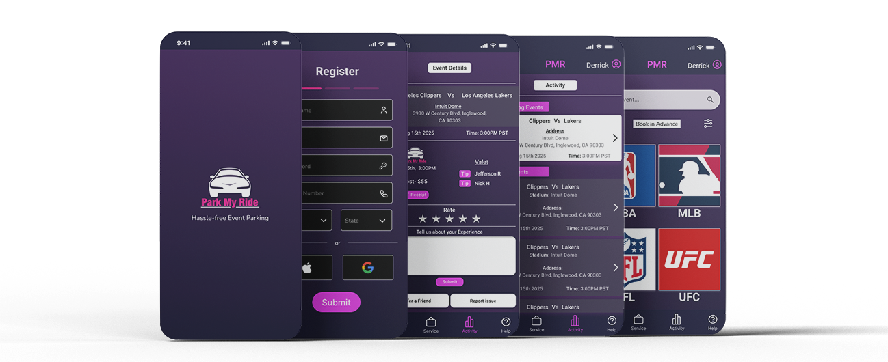
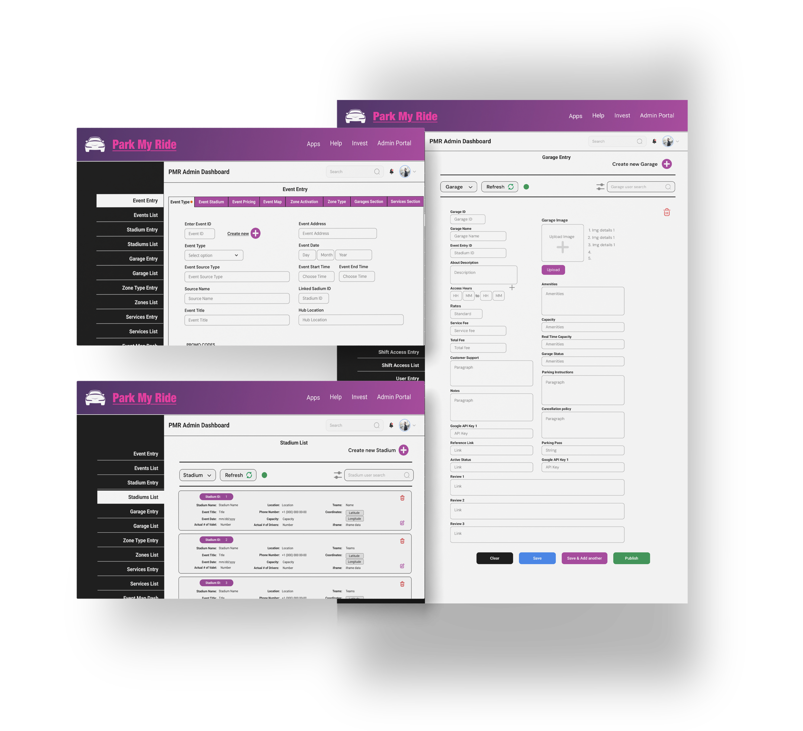
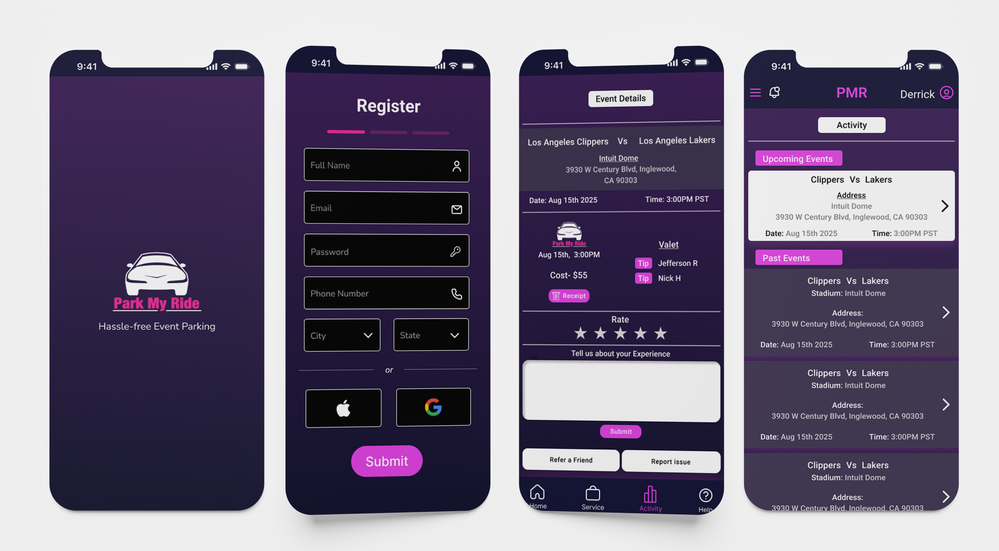
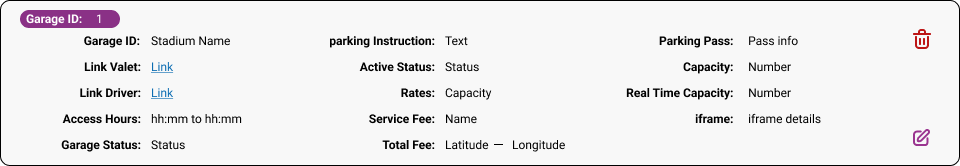
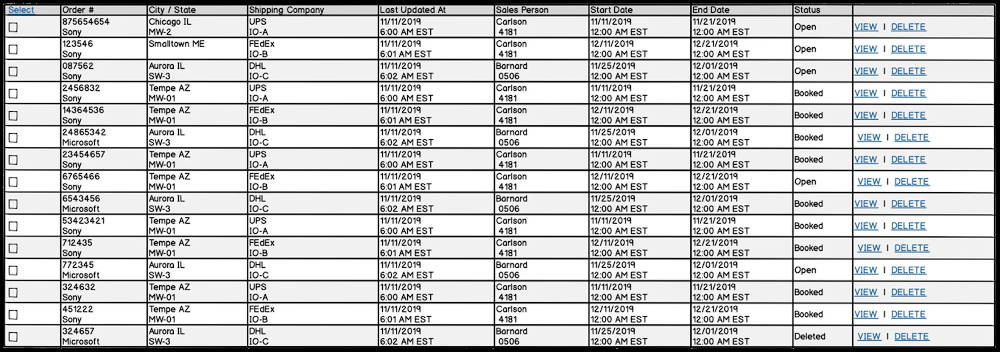

Scaling Real-Time
Coordination Systems
Coordinating 9,000+ vehicles for stadium-scale events through a synchronized 3-sided ecosystem.
43s
Intake Speed
200+
Data Points
93%
Task Success
San Diego Padres Pilot: Real-time sync across 40k capacity stadium.
The Modern Product Ecosystem
Design & Specs
Figma • Adobe CC
Management
Jira • Scrum • Slack
Validation
Maze • Atlas.ti
Development
Django • GitHub • WP
Multi-User Workflows
High-volume logistics require a unified source of truth. Success relied on the sub-2-second handshake between mobile field tools and live operational dashboards.
Scalable Data Handling
Discussed architectural shifts from Django to more efficient database handling to manage increased API load as event volume scales.

Admin Dashboard
The Operations Hub: Managing 26+ screens and 200+ data points for real-time inventory.

Valet App
The Field Tool: High-contrast, one-handed UI optimized for 43-second intake cycles.

Customer App
The Interface: Frictionless booking with automated 1-tap vehicle retrieval.

Balancing Pilot Launch vs. Long-Term Roadmap
API Load Management
Targeted database efficiency discussions to move beyond Django as query volume increases.
Focus: Backend Scalability
Vehicle Inspection
Identified as a critical roadmap item for liability, though out of scope for the MVP pilot.
Focus: Future Liability Protection
Dead-Zone Sync
Updates lost in concrete garages. Result: Built an 'Offline-First' cache to prevent data loss.
Focus: Data Integrity
Tactile Field Design
Valets moving at speed need 64px hit-areas and haptic confirmation over precision taps.
Focus: Ergonomic Reliability
Evidence-Based Iteration
Testing via Maze compared two visualization formats. 85% of users preferred the "Compact Grid" (Option A), which reduced vertical scrolling by 40% and improved reaction times for valet dispatch.

Field Observation Discovery
During the pilot, we observed valets struggling with traditional "Success" modals while running. I pivoted the UI to full-screen haptic feedback states that confirm car arrival without requiring a precision tap.

Strategic Takeaways
Leading the intersection of Design, Product, and Engineering.
The Scrum Master Role
Managed JIRA ceremonies and sprint backlogs, ensuring design fidelity stayed in sync with Django development velocity for the stadium launch.
Roadmapping Complexity
Success was defined by making hard calls on MVP scope—prioritizing core sync logic over inspection flows to meet the pilot deadline while future-proofing the API architecture.